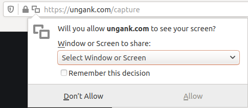

Instructions
1. Ungank requires the latest Firefox browser. Use the following link to install Firefox and reopen this page. https://www.mozilla.org
2. Start a League of Legends game, wait until the map is visible before starting predictions.
3. Click on the start prediction button to the left of these instructions and allow Ungank to see the League of Legends screen. Please wait 10-20 seconds before the first predictions appears.
Troubleshooting
1. Verify that you are using a recent Firefox web browser version. The Ungank Chrome extension will be released soon. There is no planned support for Edge or Safari browsers.
2. Ungank requires javascript to capture screenshots of the map. If javascript is disabled on your browser Ungank will not work.
3. Click on the following link to verify that this page is loaded using a secure connection. https://ungank.com/capture
4. If the previous troubleshooting steps fail, the deep learning network may be undergoing maintenance or a technical issue may be causing an outage. Please retry again later, we apologize in advance for any inconvenience.